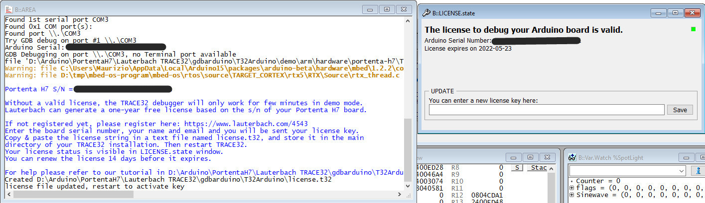
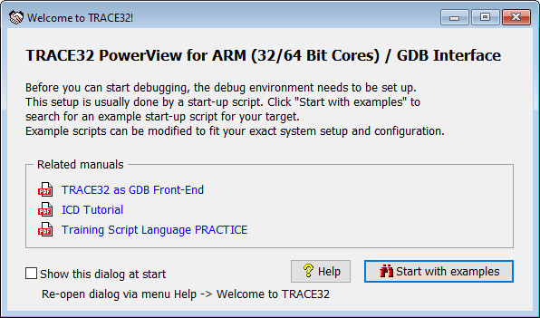
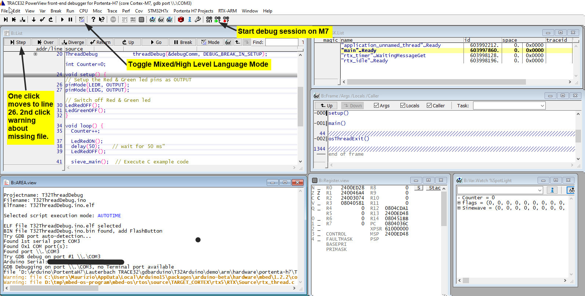
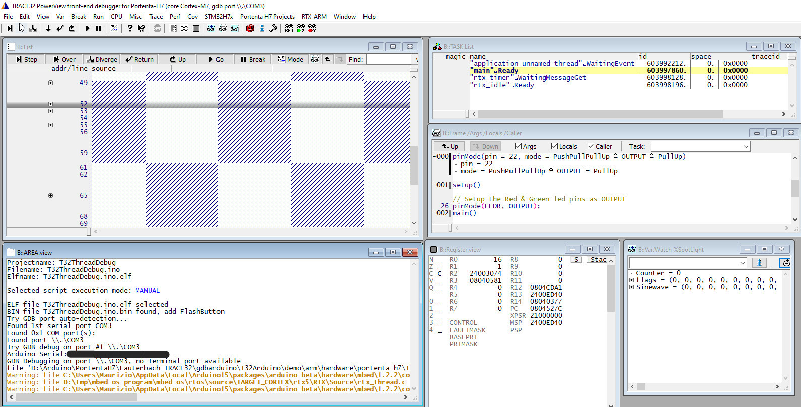

The goal for this project is to debug code written for the Portenta H7. Firstly study the tutorial: Lauterbach TRACE32 GDB Front-End Debugger for Portenta H7.
Check carefully that you have the most current versions of everything:

Work through the steps outlined in the tutorial. If you are unable to see the Serial Number of your Portenta Board in the Board Info dialog try the same steps in the Classic Arduino IDE.

Ignore the Wslcome dialog when you start-up TRACE32:

When running the first demo under "ELF File Selection" access to the source code for the Arduino Core for your platform and the mbed-os are not available:

Source Code missing for Libraries:

If you wish to step through the Arduino Core source code for your platform compile and update T32ThreadDebug.ino: You must keep the IDE open and open TRACE32 :

A third method of avoiding the Arduino IDE automatic clear out of files is to use Arduino-CLI: